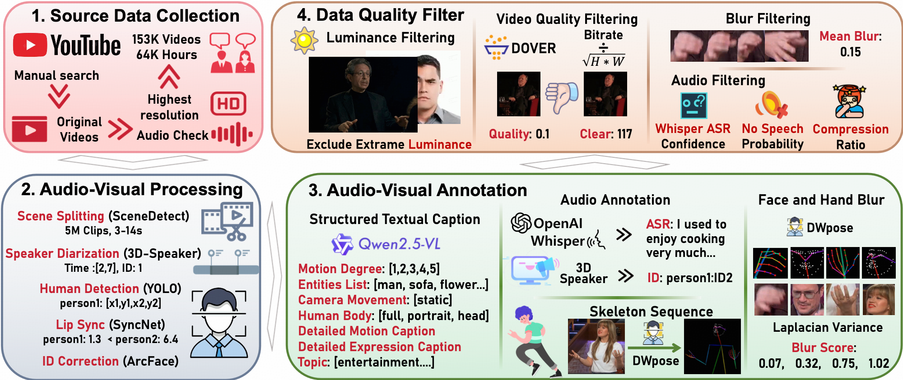
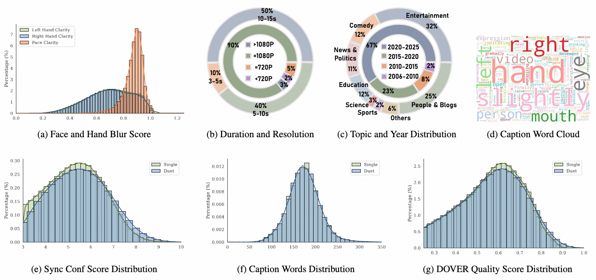
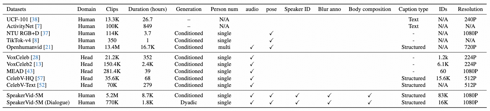

SpeakerVid-5M: A Large-Scale High-Quality Dataset for audio-visual Dyadic Interactive Human Generation
- Youliang Zhang1,2
- Zhaoyang Li2
- Duomin Wang2†
- Jiahe Zhang
- Deyu Zhou2,3
- Zixin Yin2,4
- Xili Dai3
- Gang Yu2
- Xiu Li1‡
-
†Project Lead
‡Corresponding Author
1Tsinghua University, 2StepFun
3The Hong Kong University of Science and Technology (Guangzhou)
4The Hong Kong University of Science and Technology

Overview of the audio-visual dyadic generation task and the SpeakerVid-5M dataset. The primary task (top row) is to generate a coherent audio-visual response based on the input of initiator. Our SpeakerVid-5M (bottom left) provides over 8.7K hours data to facilitate this research. Each clip is enriched with detailed multi-modal annotations (right panel), enabling fine-grained generation.
Abstract
The rapid development of large-scale models has catalyzed significant breakthroughs in the digital human domain. These advanced methodologies offer high-fidelity solutions for avatar driving and rendering, leading academia to focus on the next major challenge: audio-visual dyadic interactive virtual human. To facilitate research in this emerging area, we present SpeakerVid-5M dataset, the first large-scale, high-quality dataset designed for audio-visual dyadic interactive virtual human generation. Totaling over $8,743$ hours, SpeakerVid-5M contains more than $5.2$ million video clips of human portraits. It covers diverse scales and interaction types, including monadic talking, listening, and dyadic conversations. Crucially, the dataset is structured along two key dimensions: interaction type and data quality. First, it is categorized into four types(dialogue branch, single branch, listening branch and multi-turn branch) based on the interaction scenario. Second, it is stratified into a large-scale pre-training subset and a curated, high-quality subset for Supervised Fine-Tuning (SFT). This dual structure accommodates a wide array of 2D virtual human tasks. In addition, we provide an autoregressive (AR)-based video chat baseline trained on this data, accompanied by a dedicated set of metrics and test data to serve as a benchmark (\textbf{VidChatBench}) for future work. Both the dataset and the corresponding data processing code will be publicly released.
Data Curation Pipeline

The SpeakerVid-5M curation pipeline. The process consists: (1) Source data collection from YouTube; (2) Multi-step audio- visual pre-processing; (3) Rich multi-modal annotation using models like Qwen-VL; (4) Rigorous quality filtering stage for data fidelity.
Data Statics

Statistics of our dataset from multiple aspects, including blur score, sync score, caption, etc.
Dataset Comparison

Comparative analysis of SpeakerVid-5M with existing human video datasets. Person num indicates the number of individuals present in a given clip. For each clip, only one person is retained, ensuring a clean alignment between the audio and visual streams. Blur anno represents the degree of blurriness of the hands and face in each frame. Body composition means the fine-grained annotations for body composition (full-body, half-body, head-only) and camera perspective (frontal, side), features that are absent in most prior work.
Dataset Video Demonstration
Different range
Full Body
Half Body
Head
Side
Data Branch Type
Dialogue Branch
Single Branch
Listening Branch
Multi-turn Branch
Generated results of Baseline Method
Single
Dialogue
Pretrained model
Finetuned model
Citation
@inproceedings{zhang2025speakervid5m,
title={A Large-Scale High-Quality Dataset for audio-visual Dyadic Interactive Human Generation},
author={Zhang, Youliang and Li, Zhaoyang and Wang, Duomin and Zhang, Jiahe and Zhou, Deyu and Yin Zixin, and Dai, Xili and Yu, gang and Xiu, Li},
journal={arxiv},
year={2025}
}